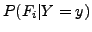
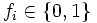
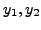
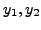

Which Digit?
 |
||||
|
Which Digit? |
|
Q1. Which log function should I use in naiveBayes.py?
A: You should use Python function math.log which gives the natural logarithm.
Q2. What's ?
A. If then
Q3. I got all formula right, why do I still get very low accuracy?
A. Be careful when using vector methods in util.Counter, some of them alter the object after they are called.
In this project, you will design three classifiers: a naive Bayes classifier and a perceptron classifier and a large-margin (MIRA) classifier. You will test your classifiers on two image datasets: a set of scanned handwritten digit images and a set of face images in which edges have already been detected. Even your simple classifiers will be able to do quite well on these tasks, at least when given enough training data.
Optical character recognition (OCR) is the task of extracting text from image sources. The first data set on which you will run your classifiers is a collection of handwritten numerical digits (0-9). This is a very commercially useful technology, similar to the technique used by the US post office to route mail by zip codes. There are systems that can perform with over 99% classification accuracy (see LeNet-5 for an example system in action).
Face detection is the task of localizing faces within video or still images. The faces can be at any location and vary in size. There are many applications for face detection, including human computer interaction and surveillance applications. You will attempt a reduced face detection task in which your system is presented with an image that has been pre-processed by an edge detection algorithm. The task is to determine whether the edge image is a face or not. There are several systems in use that perform quite well at the face detection task. One good system is the Face Detector by Schneiderman and Kanade. You can even try it out on your own photos in this demo.
The code for this project spans the following files and data files, available as a zip file.
Data file |
|
data.zip |
Data file, including the digit and face data. |
Files you will edit |
|
naiveBayes.py |
The location where you will write your naive bayes classifier. |
perceptron.py |
The location where you will write your perceptron classifier. |
mira.py |
The location where you will write your MIRA classifier. |
dataClassifier.py |
The wrapper code that will call your classifiers. You will also write your enhanced feature extractor here. You will also use this code to analyze the behavior of your classifier. |
Files you should read but NOT edit |
|
classificationMethod.py |
Abstract super class for the classifiers you will write. (You should read this file carefully to see how the infrastructure is set up.) |
samples.py |
I/O code to read in the classification data. |
util.py |
Code defining some useful tools. You may be familiar with some of these by now, and they will save you a lot of time. |
mostFrequent.py |
A simple baseline classifier that just labels every instance as the most frequent class. |
What to submit: You will fill in portions of naiveBayes.py,
perceptron.py, mira.py and dataClassifier.py
(only) during the assignment, and submit them.
Evaluation: Your code will be autograded for technical correctness. Please do not change the names of any provided functions or classes within the code, or you will wreak havoc on the autograder.
Academic Dishonesty: We will be checking your code against other submissions in the class for logical redundancy. If you copy someone else's code and submit it with minor changes, we will know. These cheat detectors are quite hard to fool, so please don't try. We trust you all to submit your own work only; please don't let us down. Instead, contact the course staff if you are having trouble.
To try out the classification pipeline, run dataClassifier.py
from the command line. This
will classify the digit data using the default classifier (mostfrequent) which blindly classifies every example
as the most frequent class. Which digit is it picking?
> python dataClassifier.py
(Note: you should unzip the data in the same directory as your code.)
As usual, you can learn more about the possible command line options by running:
> python dataClassifier.py -h
util.Counter wrapper for more convenience.
The data for the digit instances are encoded as 28x28 pixel images giving a vector of 784 features for each data item. Each feature is set to 0 or 1 depending on whether the pixel is on or not.
A Canny edge detector has been run on some face and non-face images of size 60x70 pixels, giving a vector of 4200 features for each item. Like the digits, these features can take values 0 or 1 depending on whether there was an edge detected at each pixel.
naiveBayes.py.
You will fill in the
trainAndTune function,
the calculateLogJointProbabilities function and the
findHighOddsFeatures function.
A naive Bayes classifier
models a joint distribution over a label  and a set of observed random variables, or features,
,
using the assumption that the full joint distribution can be factored
as follows (features are conditionally independent given the label):
and a set of observed random variables, or features,
,
using the assumption that the full joint distribution can be factored
as follows (features are conditionally independent given the label):
To classify a datum, we can find the most probable class given the feature values for each pixel, using Bayes theorem:
Because multiplying many probabilities together often results in underflow, we will instead compute log probabilities which have the same argmax:
We can estimate  directly from the training data:
directly from the training data:
The other parameters to estimate are the conditional probabilities of our features given each label y: . We do this for each possible feature value ().
The basic smoothing method we'll use here is Laplace smoothing which simply adds k counts to every possible observation value:
If k=0, the probabilities are unsmoothed, as k grows larger, the probabilities are smoothed more and more. You can use your validation set to determine a good value for k (note: you don't have to smooth P(C)).
Question 1 (8 points)
trainAndTune method in naiveBayes.py.
Your code should estimate
conditional probabilities from the training data for the various values
of the smoothing parameters (given in the list kgrid). It should
evaluate the performance (accuracy) on the validation set to choose
the parameter with the highest validation accuracy (in case of ties,
prefer the lowest value of the smoothing parameter k).
Also, fill in the calculateLogJointProbabilities code
which will use the conditional probability tables constructed by the
trainAndTune method and compute the log posterior probability
(as described in the theory question) for each class y for a given
passed feature vector. Read the method comments to see what data structures should be returned.
You can test your implementation of naive Bayes
with a single specific value of the smoothing parameter with the command:
> python dataClassifier.py -c naivebayes -k 2.0
This will train the naive Bayes classifier on the default 100 training examples
of the digits dataset, using 2.0 as the smoothing parameter.
You can also add code to the analysis method in dataClassifier.py
to explore the mistakes that your classifier is making.
When determining a good value for the smoothing parameter, you should
think about the number of times you scan the training data. Your code
should save computation by avoiding redundant reading.
-d digits or -d faces.
What are your classification accuracies? Explore the effect of varying the smoothing
parameter k on the performance of your classifier. Now compare the performance
of your classifiers by using 100 and 1000 training examples (use the -t 1000
option e.g.). Finally, make sure your implementation works when using the -a
flag which activates the automatic tuning of the smoothing parameters.
We highly suggest that your code print out the validation set accuracy for
each value of k tried (though this is not required).
As a sanity check, if your implementation is correct, the following command:
> python dataClassifier.py -a -d digits -c naivebayes -t 100util.Counter.argMax function.
Can you explain why the optimal value of k varies as it does when training on 100 vs 1000
training examples? Look at the validation set accuracy for digits when varying the size of
the training set up to 2500 training examples.
What can you observe about the performance? Does it look like it has leveled off?
> python dataClassifier.py -a -d digits -c naivebayes -t 1000 > python dataClassifier.py -a -d faces -c naivebayes -t 100
Another, better, tool for understanding the parameters is to look at odds ratios. For each pixel
feature  and classes , consider the odds ratio:
and classes , consider the odds ratio:
The features that have the greatest impact at classification time are those with both a high probability (because they appear often in the data) and a high odds ratio (because they strongly bias one label versus another).
Question 2 (2 points)
findHighOddsFeatures(self, class1, class2).
It should return 3 lists: featuresClass1
which are the 100 features with largest
, featuresClass2 which are the 100 features
with largest
, and featuresOdds the 100 features with highest odds ratios for class1
over class2.
findHighOddsFeatures(self, class1, class2) you can use the option -o to activate the odds ratio analysis;
and the options -1 class1 -2 class2 to specify which class1 and
class2 to use in your odds ratio analysis. Run > python dataClassifier.py -a -d digits -c naivebayes -o -1 3 -2 6 perceptron.py. You will fill in the
train function, and the findHighOddsFeatures function.
Unlike the naive Bayes classifier, a perceptron does not use
probabilities to make its decisions. Instead, it keeps a
prototype weight vector of each class  . Given a feature list
. Given a feature list  ,
the perceptron compute the class
,
the perceptron compute the class  whose prototype is most similar
to the input vector
whose prototype is most similar
to the input vector  . Formally, given a feature vector
. Formally, given a feature vector  (a map
from properties to counts, pixels to intensities), we score each class with:
(a map
from properties to counts, pixels to intensities), we score each class with:
Using the addition, subtraction, and multiplication functionality of the
Counter class in util.py, the perceptron updates should be
relatively easy to code. Certain implementation issues have been
taken care of for you in perceptron.py, such as handling iterations
over the training data and ordering the update trials. Furthermore,
the code sets up the weights data structure for you. Each
legal label needs its own prototype Counter full of weights.
Question 3 (6 points)
train method for the perceptron algorithm and test it
using the basic pixel features on the face and digit data
(use the -c perceptron option).
What classification performance do you get for each?
As a sanity check, the command: > python dataClassifier.py -d digits -t 100 -c perceptron-i iterations
option. Try different numbers of iterations and see how it influences the performance.
In practice, you would use the performance on the validation set to figure out
when to stop training, but you don't need to implement this stopping criterion for
this assignment.
Question 4 (2 points)
findHighOddsFeatures(self, class1, class2) in perceptron.py.
It should return 3 lists: featuresClass1 which are the 100 features with largest
weights for class1, featuresClass2 which are the 100 features with largest weights
for class2, and featuresOdds, the 100 features with highest difference in feature
weights.
mira.py. MIRA is an online learner which is closely related to a support vector machine. You will fill in the trainAndTune function.
trainAndTune method for the MIRA algorithm and test it
using the basic pixel features on the face and digit data
(use the -c mira option).
What classification performance do you get for each?
As a sanity check, the command: > python dataClassifier.py -d faces -c mira -i 5 > python dataClassifier.py -d faces -c mira -aBuilding classifiers is only a small part of getting a good system working for a task. Indeed, the main difference between a good system and a bad one is usually not the classifier itself (e.g. perceptron vs. naive Bayes), but rather rests on the quality of the features used. So far, we have used the simplest possible features: the identity of each pixel (being on/off).
To increase your classifier's accuracy further, you will need to extract
more useful features from the data. The EnhancedFeatureExtractorDigit
in dataClassifier.py is your new playground. When analyzing your classifiers' results (note, you might have implemented method analysis
in dataClassifier.py for this purpose), you should look at some of your
misclassified errors and look for characteristics of the input that
would give the classifier useful information about the label. For
instance in the digit data, consider the number of separate, connected
regions of white pixels, which varies by digit type. 1, 2, 3, 5, 7 tend
to have one contiguous region of white space while the loops in 6, 8, 9
create more. The number of white regions in a 4 depends on the writer.
This is an example of a feature that is not directly available to the
classifier from the per-pixel information. If your feature extractor
adds new features that encode these properties, the classifier will be
able exploit them. Note that some features may require non-trivial
computation to extract, so be careful!
Question 6 (6 points)
EnhancedFeatureExtractorDigit) in such a way that it works
with your implementation of the naive Bayes classifier: this means that
for this part,
you are restricted to features which can take a finite number of discrete
values (and if you have used the simpler implementation where you assumed
that the features were binary valued, then you are restricted to binary features).
Note that you can encode a feature which takes 3 values [1,2,3] by using 3
binary features, of which only one is on at the time, to indicate which
of the three possibilities you have. In theory, features aren't conditionally independent as naive Bayes requires,
but it can still work well in practice.
We will test your classifier with the following command:
> python dataClassifier.py -d digits -c naivebayes -f -a -t 1000
With the basic features (without the -f option), your optimal
choice of smoothing parameter should yield 82% on the validation set with a
test performance of 78%. You will get 4 points for implementing new feature(s)
which yield any improvement at all. You will get 2 additional points if your new feature(s) give you a
test performance greater or equal to 85% with the above command
(note the automatic tuning of the smoothing parameter).